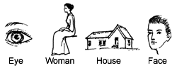
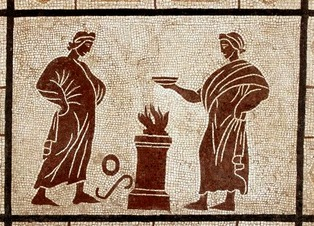

You look at trees and label them just so,
(for trees are «trees», and growing is «to grow»)
…
Yet trees are not «trees», until so named and seen –
and never were so named, till those had been
who speech’s involuted breath unfurled…
J. R. R. Tolkien
«Eso es mera convención», suele decirse. Que en el semáforo el color rojo signifique detenerse, que aplaudir haciendo palmas denote aprobación, que el tornillo o la canilla gire en tal sentido… es arbitrario; los hombres hemos convenido en eso, y no hay razones de fondo (o si las hay, son irrelevantes). La convención es artificial, y se limita a una determinada cultura (decimos también “eso es meramente cultural”). Así, lo convencional vendría a estar en situación de inferioridad con respecto a lo natural. Como una realidad de segunda categoría.
Todo esto es cierto. Pero, por otro lado… Vuelvo al momento en que Helen Keller, en la bomba de agua, al deletrear la palabra WATER, hizo su gran descubrimiento: la palabra, y con ella el lenguaje. Al fin y al cabo, que ese conjunto de letras venga a significar aquello (esa cosa líquida que sale de la bomba, que nos moja y que se bebe) es una convención ¿no? De igual modo, habría que admitir que la palabra EYE (ojo) es un signo menos real que aquel gesto que ella ya sabía hacer, el de tocar sus ojos para significar los ojos de la muñeca: esto último ya no es “mera convención”, es un gesto natural y universal, cualquier hombre puede entenderlo. ¿Y entonces…? ¿Por dónde pasa la enormidad de su descubrimiento? ¿Diremos que al descubrir el lenguaje dio con un instrumento de hecho útil… a pesar de su convencionalidad? Yo no lo diría. Al contrario, yo diría más bien que su grandeza pasa precisamente por su convencionalidad. Lo grandioso es que los hombres han convenido en usar tales signos para significar el agua y los ojos; y más: han convenido en usar determinados signos de este tipo (artificiales y precarios: un pequeño repertorio de fonemas, unos trazos sobre la arcilla, el papel o la mano) para nombrar todas las cosas del universo, para decírselas a otros hombres, y para decírselas a ellos mismos. Y esta obra vertiginosa (es prácticamente imposible rastrear la historia y la magnitud del esfuerzo) me la dan gratis, se me dona – no sólo el producto, también la empresa – estoy invitado a participar de esta convención (no sólo a usarla, también a cultivarla), por el solo hecho de pertenecer a la sociedad de los hombres.
Desde este punto de vista, lo convencional no es inferior a lo natural, sino al contrario. Desde este punto de vista (parcial, claro está) decir convención es decir algo maravillosamente humano: intención, inteligencia, libertad – y si me apuran, amor.
Traigo aquí el lenguaje como ejemplo de convención humana – sólo un ejemplo, pero acaso el más eminente. La cita de Ficino hacía referencia a esto mismo: “Mediante el uso del lenguaje y la escritura [el hombre] muestra la divinidad de su mente…”
Lo cual puede incomodar a algunos cristianos… antihumanistas. Divinidad de la mente humana… ¿no es demasiado decir? ¿Al exaltar las capacidades y las empresas específicamente humanas no se está menoscabando el honor y la grandeza de Dios creador?
A muchos les resultaría más satisfactorio (más religioso) hacerse la ilusión de que el lenguaje es una invención directa de Dios, un don hecho a los primeros hombres, y que estos se limitaron a trasmitir (conservar en el mejor de los casos, si no corromper). Vieja cuestión, que ya perturbó a Platón (quizás menos humanista él que los sofistas… por decirlo muy superficialmente). Más cerca, tenemos a los tradicionalistas católicos románticos del siglo XIX, varios de los cuales hacían del lenguaje, precisamente, el elemento primario de esa revelación primitiva, recibida por Adán de las manos de Dios y trasmitida a los descendientes.
… según de Bonald, el hombre no podría haber inventado el lenguaje para expresar sus pensamientos, pues el pensamiento mismo, implicando como implica conceptos generales, presupone alguna especie de lenguaje. Dicho de otro modo, para expresar sus pensamientos el hombre ha de ser ya utilizador de lenguaje. El lenguaje es necesario para que el hombre sea hombre. Y la sociedad humana presupone también el lenguaje y no podría existir sin él [ref]
Otros tradicionalistas de entonces como Donoso Cortés (y otros menos famosos ) andaban cerca. Más allá del tema particular del origen del lenguaje (que me queda enorme; de nuevo, sólo lo traigo como ejemplo) lo que me interesa aquí es esta tendencia religiosa, que propende a despreciar el esfuerzo humano: pesimismo antropológico,  la libertad del hombre como factor tendiente a la descomposición y al caos- y que prefiere (o preferiría) endosar a Dios directamente creaciones como la del lenguaje. La exaltación del dios benefactor nuestro… en ese plano, el de las invenciones y saberes propios de la cultura humana (lenguaje, fuego, agricultura…). Algo común en muchas religiones ( Tot entre los egipcios, Hermes+Prometeo entre los griegos, etc…) Pero en la Biblia de esto hay poco y nada, me parece a mí: Yahveh encarga a Adán que él ponga nombre a los animales, y les manda a “someter a la tierra” sin enseñarles habilidades especiales (no creo que el “coser las túnicas” cuente …)
Yo me animaría a decir (muy irresponsablemente) que este rasgo bíblico es un avance religioso… que el cristianismo continúa desde san Pablo hasta hoy. Y que esa nostalgia tradicionalista hacia rasgos religiosos arcaicos es, una vez más… mostrar la hilacha: ese reacción que, por rechazo a la modernidad, empuja a solidarizarse con el paganismo («los paganos al menos tenía la virtud de…») bien puede estar traicionando la novedad del cristianismo.
En concreto: sospecho que aquel talante que, en nombre de un celo religioso, se complace en basurear el esfuerzo humano -específicamente, el contemporáneo, que es decir el del prójimo-, no le hace ningún favor a la religión. A estos también les aplicaría lo de los amigos de Job : abogados de Dios y acusadores del hombre. No ayudan. Volviendo al ejemplo: imaginar que el lenguaje es una invención y un don de Dios, pudo haber sido en alguna edad de la humanidad un rasgo auténticamente piadoso; hoy, escamotearle al hombre el mérito de esa y otras empresas humanas para adjudicárselo a Dios (siquiera confusa o poéticamente) es en verdad una impiedad. Esas ilusiones ya no exaltan sino que rebajan a Dios. Sus dones al hombre, (vamos descubriendo, no sin perplejidades y penas) apuntan más alto – empezando por la libertad.
Creo que esto está muy emparentado con el peligro que apunta este post de Abel al final: confundir el «designio de Dios» (en tanto creador y redentor) con un problemático «plan de Dios»… entendida esta última expresión de un modo legalista y (de última) a contrapelo de la libertad humana – el ejemplo del matrimonio entre el hombre y la mujer, imaginado como algo que «está en el plan de Dios», es perfecto y muy actual.
Preveo objeciones: alguno dirá que, con la excusa de no rebajar a Dios, lo estamos poniendo en unas alturas… demasiado lejanas, que en realidad le estamos haciendo «perder terreno»; pero esa objeción se mueve en el mismo plano de los que se resistían a creer en los microbios porque con esto se debilitaba la causalidad divina en las enfermedades. Ese y otros tantos terrenos que pierde Dios… ni eran de él, ni ese era Dios.
Otro objetará que, aun admitiendo que el esfuerzo del hombre pueda ser una forma de dar gloria a Dios por el don de la libertad y la creatividad humanas, aun con eso no queda nada claro que esto sea algo específicamente cristiano, ni que Jesús estuviera muy interesado en tales empresas… culturales. Esta objeción me importa más, y por ahora me limitaré a referenciar aquel par de citas de von Balthasar.
Mientras tanto, vaya algo más sobre la convención, para mostrar que el tema tiene derivaciones de peso. Simone Weil, a propósito de las polémicas católicas-protestantes sobre la presencia de Cristo en la eucaristía, decía (más o menos) que los protestantes tenían razón al considerarlo un símbolo, y los católicos tenían razón al considerarlo una realidad ¿Cómo puede ser esto? Es que, decía ella, la presencia de Cristo en la hostia consagrada viene a ser una convención (y, en este sentido, un símbolo, no una «realidad física», y en esto tienen razón los protestantes)…. pero una convención especialísima, no ya humana sino establecida y ratificada por Dios. No somos, en este insólito caso, los hombres quienen hemos convenido en que «esto es el cuerpo de Cristo». Y así, si es verdad que las convenciones humanas son (hasta cierto punto) «menos reales», si están por debajo de lo que los hombres llamamos realidades, por el contrario una convención divina (para los hombres, de Dios) está por encima. Es «más real» (y en ese sentido tienen razón los católicos). Claro que Simone Weil no es ninguna autoridad teológica, y menos en este tema. Schillebeeckx, sin embargo, encontraba que esta idea era muy digna de tenerse en cuenta – y yo lo mismo. Ahora bien, si esta interpretación dice algo verdadero, dice algo importante; y para penetrar en ella (¿qué cuernos vendría a ser una «convención divina»?) hay que empezar haciendo justicia a la convención específicamente humana, en lo que ella tiene de intencional.
Muy bueno. No puedo dejar de pensar en lo equívoca que puede resultar la palabra «religión» aplicada a las religiones naturales y al cristianismo, que -si bien no puede renunciar a poner en movimiento la religiosidad del hombre, ya que pretende hablarle a todo el hombre (incluida su realidad religiosa)- no termina de acomodarse a lo propio de una religión, es decir a la división y exaltación de unos tiempos, unos espacios, unas personas y unas acciones que deben considerarse «sagrados», a diferencia de todo lo demás, que vendría a ser «profano».
En Cristo, Dios «sacralizó» todo, lo que también podría dar por resultado que lo «profanizó» (por no decir la chocante «profanó») todo, de tal modo que aquello que nos acerca a Él, nos acerca, y aquello que nos aleja de Él, nos acerca.
Para mí ese es el núcleo que hace:
1-inviable el concepto de «naturaleza» del mundo tradicional, entendido como designio racional inmutable
2-la aplicación del esquema pagano de la «edad de oro» al devenir de la historia, que para el cristianismo siempre es expectativa de más Dios-con-nosotros, nunca de menos.
En cuanto a esta idea:
» Yahveh encarga a Adán que él ponga nombre a los animales, y les manda a “someter a la tierra” sin enseñarles habilidades especiales […]. Yo me animaría a decir […] que este rasgo bíblico es un avance religioso… que el cristianismo continúa desde san Pablo hasta hoy»
Sí, me parece estupendamente resumido, aunque con sus tensiones, porque luego, en el conjunto de Gn 1-11 la técnica humana va a ser valorada más bien negativamente (Gn 4,17ss, Gn 9, Gn 11). Sin embargo el balance es que Dios se aparece allí donde ocurren los puntos de disolución del hombre, castiga a los que debe castigar, y ofrece nuevas perspectivas, pero no hay nunca vuelta atrás.
La exégesis contemporánea, que se ha tomado más en serio estos textos, ha sido muy sensible a la «condena de la técnica» (y lo han reputado como mitológico antiguo), pero a mi juicio no han sabido ver esto que señalas.
Sigo el hilo de esta serie de entradas tan interesantes sobre el cristianismo y la tarea común desde sus orígenes y espero la solución al capital escollo de la aparente despreocupación de Cristo por la cultura. Mientras tanto, ahí van algunos interrogantes-pensamientos:
1) ¿No implica el mero hecho de preguntarnos si podemos ser fieles a Cristo y participar en la tarea común una infidelidad? ¿No estamos dudando de la bondad de la “tarea de Cristo”, suponiendo que algún bien queda fuera de ella?
2) ¿Pudiera ser que el problema “Reino de Dios-Mundo” viniera de un malentendido? Porque por mundo, los cristianos, podemos entender: a) aquella parte de la civilización que desconoce u opera independientemente de la Revelación cristiana, y b) mundanidad. De hecho, la palabra mundo se usa de ambas maneras en los Evangelios (“¿de qué te sirve ganar el mundo si arruinas tu vida?” y “el Hijo del Hombre no vino a condenar al mundo si no a salvarlo”).
Entiendo por mundanidad el moverse por motivos impuros, es decir, violentos, destructores, disgregadores, aisladores, (“el que no recoge conmigo desparrama”) que son, entre otros, el prestigio, el reconocimiento, la riqueza, la comodidad, el placer, la seguridad, etc.
En este sentido, la mundanidad se opone claramente al Reino de Dios, que evoca, en cambio, un dejarse llevar por el único motor puro que puede darse en el hombre –sea consciente o inconscientemente-: la obediencia filial a Dios-Padre (el que está a la vez infinitamente cerca e infinitamente lejos de nosotros) (“sólo una cosa es necesaria”).
O puede que no haya malentendido y los cristianos entendamos conscientemente que el motor del mundo sea la mundanidad ¿Hay detrás del malentendido una mirada que sólo es capaz de ver afuera lo que veladamente desea o simple verdad?
3) La aparente contradicción entre la, en principio, obligación que tenemos de participar en la tarea común por pura justicia sin “sucumbir al proceso marxista” y el desapego de Cristo por lo cultural puede que tenga su raíz en una errónea concepción de esa obra que llamamos mundo como algo definitivo. Tememos el contacto con el mundo por miedo a mundanizarnos y de hecho muchos de nuestros experimentos con el mundo acaban siendo mundanos; y esto es porque no podemos evitar derramar en el mundo nuestra propia mundanidad. Nos tienta el pecado en el que cayeron los constructores de la Torre de Babel y el becerro de oro, que no es otro que el de eternizar-idolatrar la obra de nuestras manos. Cristo nos llamó a vivir el día a día, el nomadismo, la pobreza espiritual y material. En definitiva nos mandó ser peregrinos y ¿hay algo más transitorio, más efímero y dependiente de su tiempo, a pesar de nuestros esfuerzos por hacerla eterna que la civilización? Quizás el problema no esté en la tarea común sino en nuestra mirada.
Yo apuesto a que lo maravilloso de las convenciones no reside en ellas mismas ni en el esfuerzo por fijarlas sino en el arte que hacen posible. Por ejemplo, en la música, el temperamento igual que se estableció por convención en el s. XVII y permite, entre otras cosas, modular o interpretar obras en todas las tonalidades con el mismo instrumento. «El clavecín bien temperado» es un esfuerzo enorme para promover este temperamento pero su grandeza no reside en aquí sino en el arte de su factura. La convención musical tendría la misma relevancia que acordar la distancia que separa los rieles de la línea del tren (una necesidad práctica) si no fuera por las grandes obras de arte que gracias a ella fueron posibles. El esfuerzo en sí mismo no es admirable (no creo que hagan falta ejemplos) a menos que la obra de arte lo rescate, por decirlo así. Kennedy cuando anunció el viaje a la luna se justificaba únicamente en que era una empresa difícil. Esto por lo menos a mi no me admira, sino que me provoca desconfianza. Si algo justificó aquel esfuerzo son los nuevos conocimientos y horizontes que se abrieron allí. Ahora, lo que pasa con el lenguaje es un caso especial. Podría decirse que sólo en la poesía o la literatura ese cultiva el arte de la palabra, pero en el habla común nunca deja de recrearse igualmente toda la riqueza simbólica, el poder evocativo, yo diría la magia de cada fonema. En este sentido un folleto explicativo o manual de instrucciones no dejan de ser una creación artística (aunque muy cuestionable). Tal vez puede decirse que en el lenguaje (sobretodo en este último caso) la obra que justifica la convención es la convención misma.